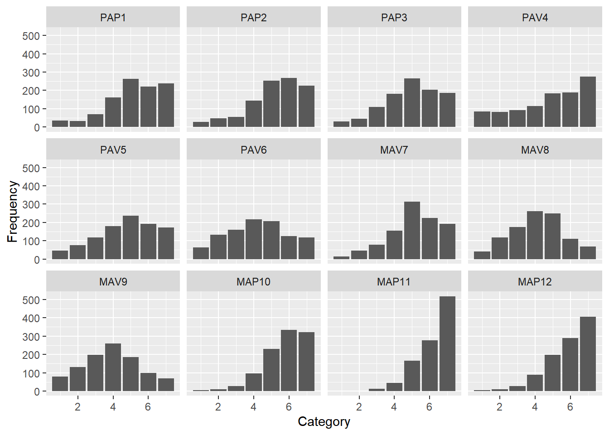
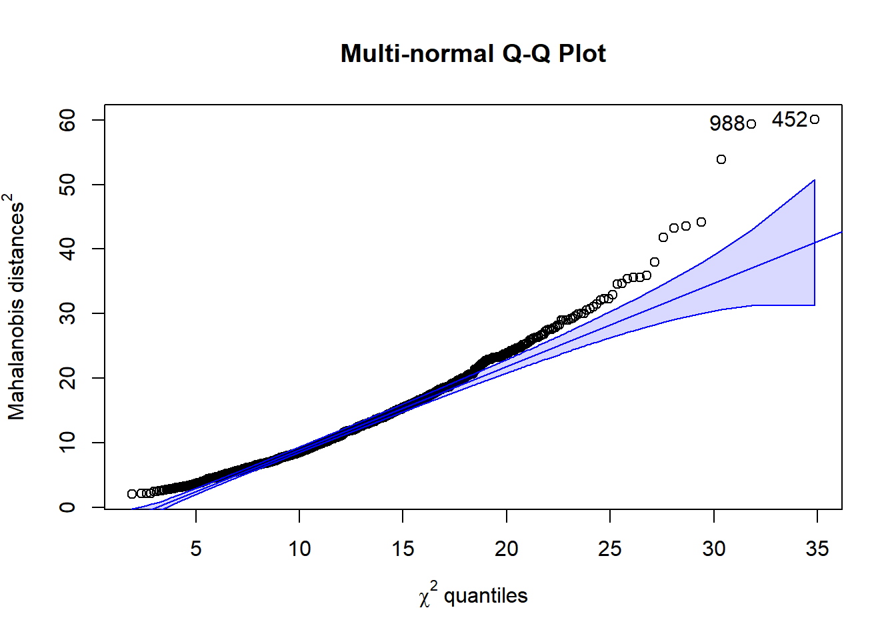

20 Preparatory steps
First let’s read in our data and take a look at the descriptive statistics and the correlation matrix.
## 'data.frame': 1022 obs. of 13 variables:
## $ PID : chr "S0001" "S0002" "S0003" "S0004" ...
## $ PAP1 : int 6 7 6 6 7 7 7 7 7 5 ...
## $ PAP2 : int 7 7 5 6 7 7 7 7 7 6 ...
## $ PAP3 : int 6 7 5 6 7 7 7 5 7 5 ...
## $ PAV4 : int 6 7 5 6 7 7 7 7 7 6 ...
## $ PAV5 : int 5 2 5 6 4 4 7 6 4 7 ...
## $ PAV6 : int 1 7 6 6 7 7 7 7 7 3 ...
## $ MAV7 : int 7 6 5 4 3 6 7 5 4 6 ...
## $ MAV8 : int 6 2 6 1 6 7 7 3 4 7 ...
## $ MAV9 : int 6 2 4 1 5 7 7 1 5 7 ...
## $ MAP10: int 7 7 7 6 7 7 7 7 7 6 ...
## $ MAP11: int 7 7 7 6 7 7 7 7 7 7 ...
## $ MAP12: int 7 7 6 5 7 7 7 7 7 7 ...Notice that this is the same data set we used in class during Week 8.
With these data, there are four hypothesized constructs, which are described in Bandalos (2018, 335–37). The first three letters of each item’s name reminds us which construct it is intended to represent.
20.1 Describing the data
Here are the descriptive statistics, treating the data as continuous. The low-fidelity version of this function is simply psych::describe(dat). The fancy code is optional, but nice for making it pretty. I learned about the flextable package (R-flextable?) from Havi.
n | mean | sd | median | min | max | skew | kurtosis | se |
|---|---|---|---|---|---|---|---|---|
1,022 | 5.15 | 1.55 | 5 | 1 | 7 | -0.75 | 0.12 | 0.05 |
1,022 | 5.20 | 1.53 | 5 | 1 | 7 | -0.85 | 0.24 | 0.05 |
1,022 | 4.91 | 1.55 | 5 | 1 | 7 | -0.51 | -0.32 | 0.05 |
1,022 | 4.86 | 1.94 | 5 | 1 | 7 | -0.60 | -0.82 | 0.06 |
1,022 | 4.71 | 1.68 | 5 | 1 | 7 | -0.43 | -0.62 | 0.05 |
1,022 | 4.19 | 1.72 | 4 | 1 | 7 | -0.05 | -0.87 | 0.05 |
1,022 | 5.10 | 1.42 | 5 | 1 | 7 | -0.59 | -0.06 | 0.04 |
1,022 | 4.14 | 1.50 | 4 | 1 | 7 | -0.06 | -0.54 | 0.05 |
1,022 | 3.89 | 1.60 | 4 | 1 | 7 | 0.06 | -0.64 | 0.05 |
1,022 | 5.76 | 1.18 | 6 | 1 | 7 | -1.03 | 1.22 | 0.04 |
1,022 | 6.21 | 0.98 | 7 | 1 | 7 | -1.22 | 1.34 | 0.03 |
1,022 | 5.89 | 1.20 | 6 | 1 | 7 | -1.13 | 1.21 | 0.04 |
As usual, we can use the cor() and cov() functions to obtain the correlation and covariance matrices.
Here is some optional formatting code. If this causes problems in R, just use cor() and cov().
R <- cor(dat)
# Removing the upper diagonal from the cov matrix:
R[upper.tri(R, diag = FALSE)] <- NA
# Making the output pretty:
R %>% as.data.frame() %>%
rownames_to_column("var") %>%
mutate(across(where(is.numeric), round, 3 )) %>% # rounding numeric columns
flextable() %>% autofit() %>% fit_to_width(7.5)var | PAP1 | PAP2 | PAP3 | PAV4 | PAV5 | PAV6 | MAV7 | MAV8 | MAV9 | MAP10 | MAP11 | MAP12 |
|---|---|---|---|---|---|---|---|---|---|---|---|---|
PAP1 | 1.000 | |||||||||||
PAP2 | 0.690 | 1.000 | ||||||||||
PAP3 | 0.702 | 0.712 | 1.000 | |||||||||
PAV4 | 0.166 | 0.245 | 0.188 | 1.000 | ||||||||
PAV5 | 0.163 | 0.248 | 0.179 | 0.380 | 1.000 | |||||||
PAV6 | 0.293 | 0.421 | 0.416 | 0.482 | 0.377 | 1.000 | ||||||
MAV7 | -0.040 | 0.068 | 0.021 | 0.227 | 0.328 | 0.238 | 1.000 | |||||
MAV8 | 0.143 | 0.212 | 0.217 | 0.218 | 0.280 | 0.325 | 0.386 | 1.000 | ||||
MAV9 | 0.078 | 0.145 | 0.163 | 0.119 | 0.254 | 0.301 | 0.335 | 0.651 | 1.000 | |||
MAP10 | 0.280 | 0.254 | 0.223 | 0.039 | 0.066 | 0.059 | 0.018 | 0.152 | 0.129 | 1.000 | ||
MAP11 | 0.182 | 0.202 | 0.186 | 0.012 | -0.008 | 0.051 | 0.052 | 0.202 | 0.177 | 0.558 | 1.00 | |
MAP12 | 0.112 | 0.154 | 0.128 | 0.029 | 0.021 | 0.084 | 0.160 | 0.221 | 0.205 | 0.483 | 0.58 | 1 |
# Because we just removed the upper matrix from R, for making the printout
# pretty, we can get back to the full R matrix if we need to using the
# force `Matrix::symmetric()` function:
library(Matrix)
# help("forceSymmetric", package = "Matrix")
R <- Matrix::forceSymmetric(R, uplo="L")
R <- as.matrix(R)We notice that there is variation in the magnitude of these correlations. We see that the items hypothesized to load on the same constructs tend to more strongly correlate with each other than with the other items in the data set. Our descriptive statistics suggest the scale goes from 1 to 7. We should examine how many functioning scale points are used in each item. We also see that most of the items have negative skew, with most of the means and medians being higher than the midpoint of 4. MAP11 seems to have the strongest skew and smallest standard deviation.
Here is the covariance matrix, using the same kind of pretty code. If this causes problems in R, just use cov(dat):
S <- cov(dat)
# Removing the upper diagonal from the cov matrix:
S[upper.tri(S, diag = FALSE)] <- NA
# Making the output pretty:
S %>% as.data.frame() %>%
rownames_to_column("var") %>%
mutate(across(where(is.numeric), round, 3 )) %>% # rounding numeric columns
flextable() %>% autofit() %>% fit_to_width(7.5)var | PAP1 | PAP2 | PAP3 | PAV4 | PAV5 | PAV6 | MAV7 | MAV8 | MAV9 | MAP10 | MAP11 | MAP12 |
|---|---|---|---|---|---|---|---|---|---|---|---|---|
PAP1 | 2.393 | |||||||||||
PAP2 | 1.631 | 2.337 | ||||||||||
PAP3 | 1.689 | 1.693 | 2.417 | |||||||||
PAV4 | 0.498 | 0.726 | 0.568 | 3.758 | ||||||||
PAV5 | 0.424 | 0.637 | 0.466 | 1.237 | 2.822 | |||||||
PAV6 | 0.778 | 1.104 | 1.110 | 1.604 | 1.087 | 2.945 | ||||||
MAV7 | -0.087 | 0.148 | 0.046 | 0.627 | 0.785 | 0.582 | 2.028 | |||||
MAV8 | 0.332 | 0.487 | 0.507 | 0.636 | 0.708 | 0.838 | 0.827 | 2.262 | ||||
MAV9 | 0.194 | 0.356 | 0.408 | 0.370 | 0.685 | 0.830 | 0.764 | 1.572 | 2.576 | |||
MAP10 | 0.510 | 0.458 | 0.409 | 0.089 | 0.131 | 0.120 | 0.031 | 0.270 | 0.244 | 1.389 | ||
MAP11 | 0.275 | 0.303 | 0.283 | 0.022 | -0.012 | 0.086 | 0.072 | 0.297 | 0.279 | 0.644 | 0.957 | |
MAP12 | 0.207 | 0.282 | 0.237 | 0.067 | 0.042 | 0.172 | 0.272 | 0.397 | 0.393 | 0.681 | 0.679 | 1.432 |
We’ll look at this observed covariance matrix when we compare the reproduced covariance matrix to it.
20.1.1 An article reported R and the SDs, so how can I get S?
If you only have access to the correlation matrix and standard deviations, you can get the covariance matrix:
R_lower <- read.csv("Week09_BandalosTable13.3.csv")
R_lower <- as.matrix(R_lower)
SDs <- c(1.55, 1.53, 1.56, 1.94, 1.68, 1.72,
1.42, 1.50, 1.61, 1.18, 0.98, 1.20)
D <- diag(SDs)
S.from.R <- D %*% R %*% D
round(S.from.R, 2)## [,1] [,2] [,3] [,4] [,5] [,6] [,7] [,8] [,9] [,10] [,11] [,12]
## [1,] 2.40 1.64 1.70 0.50 0.43 0.78 -0.09 0.33 0.20 0.51 0.28 0.21
## [2,] 1.64 2.34 1.70 0.73 0.64 1.11 0.15 0.49 0.36 0.46 0.30 0.28
## [3,] 1.70 1.70 2.43 0.57 0.47 1.12 0.05 0.51 0.41 0.41 0.28 0.24
## [4,] 0.50 0.73 0.57 3.76 1.24 1.61 0.63 0.63 0.37 0.09 0.02 0.07
## [5,] 0.43 0.64 0.47 1.24 2.82 1.09 0.78 0.71 0.69 0.13 -0.01 0.04
## [6,] 0.78 1.11 1.12 1.61 1.09 2.96 0.58 0.84 0.83 0.12 0.09 0.17
## [7,] -0.09 0.15 0.05 0.63 0.78 0.58 2.02 0.82 0.76 0.03 0.07 0.27
## [8,] 0.33 0.49 0.51 0.63 0.71 0.84 0.82 2.25 1.57 0.27 0.30 0.40
## [9,] 0.20 0.36 0.41 0.37 0.69 0.83 0.76 1.57 2.59 0.24 0.28 0.40
## [10,] 0.51 0.46 0.41 0.09 0.13 0.12 0.03 0.27 0.24 1.39 0.65 0.68
## [11,] 0.28 0.30 0.28 0.02 -0.01 0.09 0.07 0.30 0.28 0.65 0.96 0.68
## [12,] 0.21 0.28 0.24 0.07 0.04 0.17 0.27 0.40 0.40 0.68 0.68 1.4420.1.2 Describing from a categorical perspective
We did this in the last session, which has some easier code to get the descriptive statistics item-by-item. Here’s the fancy code for getting the plot of all the items’ responses:
library(SmartEDA)
freqout <- SmartEDA::ExpCustomStat(dat,
Cvar = colnames(dat),
stat = c("Count","prop"),
gpby = FALSE)
names(freqout) <- c("Category", "Item", "Frequency", "Percent")
freqout_alpha <- freqout %>%
arrange(Item, Category)
# head(freqout_alpha, 10)
library(ggplot2)
library(gridExtra)
freqout %>%
# This mutate function is optional, just to get the items to be in the order we want:
mutate(Item = factor(Item, levels = unique(freqout$Item) )) %>%
ggplot( aes(x = Category, y = Frequency)) +
geom_col() +
facet_wrap(. ~ Item, nrow = 3 )
It seems like 75% of our variables have ample responses in all of the categories. We might be concerned with MAP11 and maybe with MAP10 and MAP12 because there are not many responses in the lower two categories. If there were only four categories being used, we should treat these data as categorical.
20.1.2.1 The easiest way to examine counts
If all we’re looking for are the frequency of responses to each category in each item, a simple approach is to specify our items as being ordered factors instead of numeric and using the summary() function on our data.
## PAP1 PAP2 PAP3 PAV4 PAV5 PAV6 MAV7 MAV8 MAV9 MAP10 MAP11 MAP12
## 1: 35 1: 29 1: 31 1: 84 1: 47 1: 64 1: 13 1: 42 1: 80 1: 6 1: 1 1: 5
## 2: 32 2: 47 2: 46 2: 82 2: 76 2:133 2: 46 2:118 2:132 2: 10 2: 1 2: 10
## 3: 71 3: 56 3:109 3: 93 3:117 3:159 3: 79 3:174 3:197 3: 26 3: 13 3: 26
## 4:162 4:145 4:182 4:114 4:180 4:216 4:154 4:261 4:260 4: 96 4: 45 4: 88
## 5:262 5:252 5:265 5:185 5:237 5:206 5:314 5:248 5:185 5:230 5:166 5:199
## 6:222 6:267 6:203 6:189 6:193 6:125 6:225 6:111 6:100 6:333 6:278 6:289
## 7:238 7:226 7:186 7:275 7:172 7:119 7:191 7: 68 7: 68 7:321 7:518 7:40520.1.3 Addressing assumptions
With linearity, we could examine the bivariate plots all pairs of variables using the plot(dat) function but this will be uninterpretable because of the small size of each of the plots. Because we have 12 variables, there will be \(12(12-1) / 2 = 66\) pairwise plots.
If we wanted to examine a specific pair of items, we can use the geom_smooth() function in GGplot2. First, we create a line that is allowed to curve so that it best describes the nonlinear relationship between the two variables. For this, we use the method = "loess" argument. We can think about that line as lots of little, local, regressions on the data at each small increment in the data. After that, we overlay a line that is forced to be linear. If the linear line reasonably matches the loess line, we can argue for linearity.
Here’s an example with two items that seem to have a small amount of non-linearity, though probably not enough to hurt this assumption:
ggplot(dat, aes(x = MAV9, y = MAP12)) +
geom_point() +
geom_smooth(method = "loess", se = FALSE) +
geom_smooth(method = "lm", color = "brown")
We can detect multivariate outliers using our usual procedures:
varbs <- cbind(dat) # Note that in our data, we're using all of the columns
distances <- mahalanobis(varbs,
center = colMeans(varbs),
cov = cov(varbs))
raw$distances <- distances
# Let's keep a record of those who exceed the p < .001 criterion, if any:
raw$p <- pchisq(distances,
df = (ncol(varbs)-1), # df is number of variables - 1
lower.tail = FALSE)We can see which cases in our data set are flagged as outliers. I think Base R is better here than tidyverse.
# Let's use Base R to save a column that indicates whether the case is an outlier.
raw$outlier <- ifelse(raw$p < .001, 1, 0)
# Let's print those rows for which their outlier status is true:
out.liars <- raw[raw$outlier == 1, c("PID", "distances", "p", "outlier")]
out.liars## PID distances p outlier
## 125 S0125 43.56740 8.648903e-06 1
## 172 S0172 35.93353 1.735968e-04 1
## 194 S0194 43.25519 9.804388e-06 1
## 199 S0199 32.92628 5.408306e-04 1
## 296 S0296 34.65967 2.819395e-04 1
## 371 S0371 41.84562 1.722452e-05 1
## 393 S0393 32.09814 7.355548e-04 1
## 452 S0452 60.02265 9.182751e-09 1
## 486 S0486 35.56532 1.998225e-04 1
## 497 S0497 31.51915 9.106198e-04 1
## 694 S0694 35.55273 2.007845e-04 1
## 705 S0705 37.99227 7.847168e-05 1
## 712 S0712 44.19936 6.705832e-06 1
## 743 S0743 35.43172 2.102671e-04 1
## 760 S0760 34.56138 2.926267e-04 1
## 823 S0823 32.29947 6.827257e-04 1
## 840 S0840 53.85349 1.255264e-07 1
## 850 S0850 32.34198 6.720523e-04 1
## 988 S0988 59.38391 1.206490e-08 1Dang! There are a lot of multivariate outliers. We can count how many there and see there are 19:
## [1] 19For convenience, we can sort those rows by their distances to see who are the most extreme outliers.60
## PID distances p outlier
## 1 S0452 60.02265 9.182751e-09 1
## 2 S0988 59.38391 1.206490e-08 1
## 3 S0840 53.85349 1.255264e-07 1
## 4 S0712 44.19936 6.705832e-06 1
## 5 S0125 43.56740 8.648903e-06 1
## 6 S0194 43.25519 9.804388e-06 1
## 7 S0371 41.84562 1.722452e-05 1
## 8 S0705 37.99227 7.847168e-05 1
## 9 S0172 35.93353 1.735968e-04 1
## 10 S0486 35.56532 1.998225e-04 1
## 11 S0694 35.55273 2.007845e-04 1
## 12 S0743 35.43172 2.102671e-04 1
## 13 S0296 34.65967 2.819395e-04 1
## 14 S0760 34.56138 2.926267e-04 1
## 15 S0199 32.92628 5.408306e-04 1
## 16 S0850 32.34198 6.720523e-04 1
## 17 S0823 32.29947 6.827257e-04 1
## 18 S0393 32.09814 7.355548e-04 1
## 19 S0497 31.51915 9.106198e-04 1It seems like Person S0452 is the most extreme outlier, S0988 is the second most extreme outlier, and so forth.
Let’s examine the multivariate Q-Q plot based on the Mahalanobis distances:61
car::qqPlot(distances,
distribution = "chisq", df = mean(distances),
lwd = 1,
grid = FALSE,
main = "Multi-normal Q-Q Plot",
xlab = expression(chi^2 * " quantiles"),
ylab = expression("Mahalanobis distances "^2))
## [1] 452 988If we are expected to also report a statistical test of normality, we can use the mulitvariate Shapiro-Wilk test that we used in Week 3. The mshapiro.test() function from the mvnormtest package (R-mvnormtest?). This function requires the data be arranged as rows instead of columns, so we’ll use the transpose function, t() within the test.
##
## Shapiro-Wilk normality test
##
## data: Z
## W = 0.97116, p-value = 2.257e-13We see results that are consistent with our outliers and Mahalanobis distance Q-Q plot. The Shapiro-Wilk normality test (W = 0.97, p = < .01) suggests the data are statistically significantly different from a normal distribution.
Another multivariate normality test we might encounter in research is the Mardia test. We can use the mardiaKurtosis() function from the semTools package (R-semTools?). 62
## b2d z p
## 195.531 24.007 0.000Even though the absolute values of the skew and kurtosis of each of the variables in our earlier descriptive statistics were all below 2.0, there appears to be a non-normal distribution. With the Mardia kurtosis z-statistic \((z = 24.01, p < .05)\) being statistically significant, we see more evidence that the assumption of multivariate normality was not met. This statistical significance is not surprising because we have a large sample size. Among all of the sources of evidence, we can probably trust the plots over these statistical tests of the multivariate normality; nonetheless, we will encounter these in publications and possibly from reviewers requesting them.
This collection of evidence suggests that the multivariate normality assumption was not met. This result should inform our decisions about which estimation method to use and whether to use adjustments. Instead of using maximum likelihood estimation, we can use a robust estimation approach, specifically the “maximum likelihood robust” (MLR) method.63
References
Here’s the code for printing an ordered set using the Base R approach, which is a little convoluted but is useful if tidyverse misbehaves:
out.liars[ order(out.liars$distances, decreasing = TRUE) , ].↩︎We can also use the psych package’s
outlier()function to plot multivariate outliers.psych::outlier(dat).↩︎We could also use the
mvn()function from the MVN package (R-MVN?). Themvn()function has an option to print the histogram of each variable similar to what we created above. The MVN package also has themardia()function, which includes a Q-Q plot.↩︎In lavaan, we specify this in our
cfa()function with the argumentestimator = "MLR".↩︎